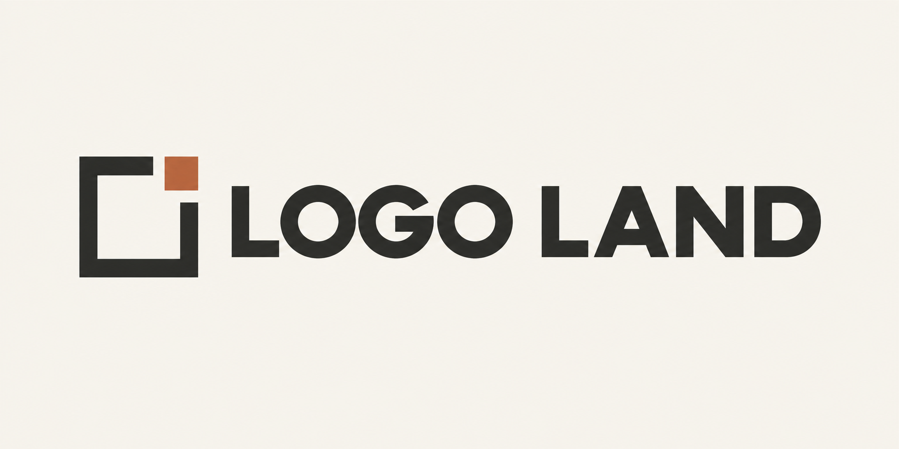

Actual original PNG, displayed with CSS only. Master: 1774 × 887, opaque ivory. No image resizing, alpha conversion or recoloring.

The ivory rectangle belongs to the PNG. This master is not transparent.
Create logos and mobile app icon artwork through a conversation with Codex. Describe your product and the feeling you want, compare original concepts, then refine your chosen image.
Transparent PNG · Light/dark preview · Verification and usage
This GROVE SUPPLY sample has actual transparent pixels and is recommended for light surfaces; its green lettering has limited contrast on dark backgrounds. The Logo Land master at the top of this README has an opaque ivory background.
대화로 로고와 모바일 앱 아이콘 아트워크를 만드는 Codex 플러그인입니다. 제품과 원하는 느낌을 말씀하시면 원본 시안을 비교하고 선택한 이미지를 다듬으실 수 있습니다.
투명 PNG · 밝은·어두운 바탕 미리보기 · 검증과 사용 안내
GROVE SUPPLY 예제는 실제 투명 픽셀을 가진 PNG이며 밝은 바탕에 적합합니다. 초록 글자는 어두운 바탕에서 대비가 낮습니다. 이 README 상단의 Logo Land 마스터는 불투명 아이보리 배경입니다.
New original PNG · Exact prompt · Native receipt · Historical identity
{kind=link}
{kind=link}